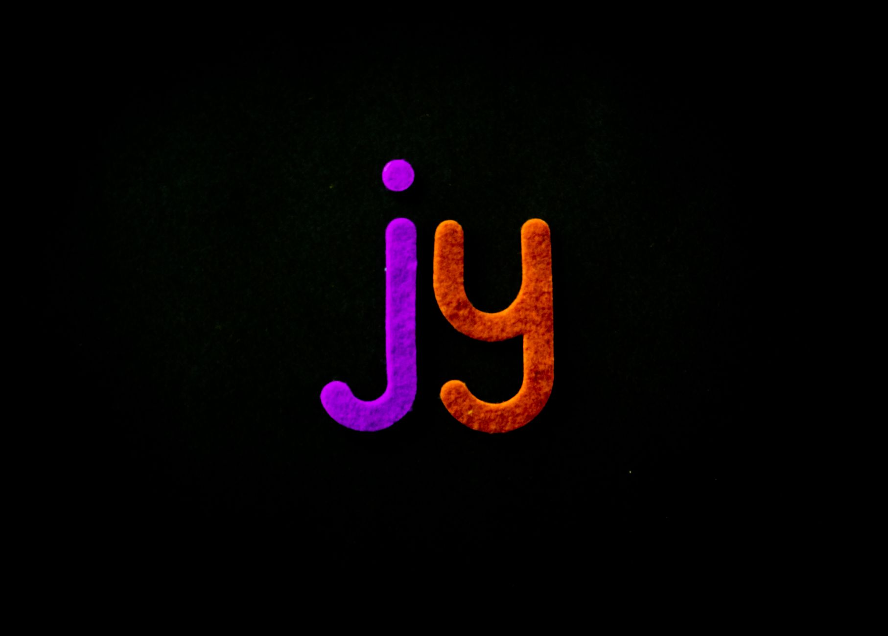

UFLI Lesson 84
Say the word “rain.” Feel how the long A sound stretches? That's ai working together. Two letters, one long A sound.
Both ai and ay say the long A sound. The difference is where you put them.
Use ai when the long A sound is in the middle of a word or syllable.
Use ay when the long A sound is at the end of a word or syllable.
Here's a quick way to remember: ai goes in the middle of words, and ay goes at the end. You won't see ay in the middle of a word. And you won't see ai at the end.
Say each word out loud. Watch for the yellow highlight on each vowel team.
These eight words are mixed up. Decide whether each word uses ai or ay.
ai words (middle of word):
ay words (end of word):
Remember the pattern: ai in the middle, ay at the end.
This lesson covers UFLI Foundations Lesson 84 (ai / ay). The free UFLI Foundations Toolbox has printable and digital resources for extra practice.